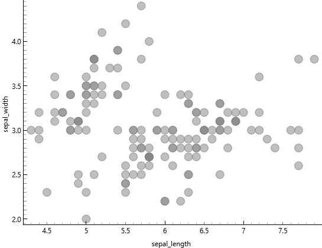
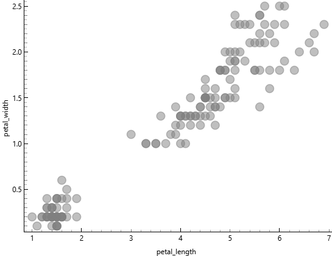
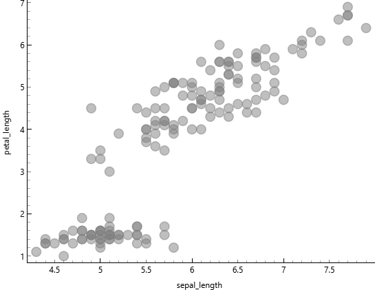
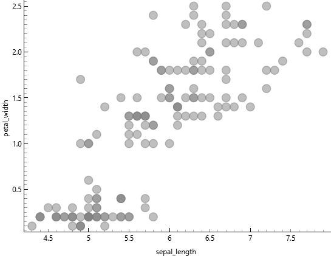
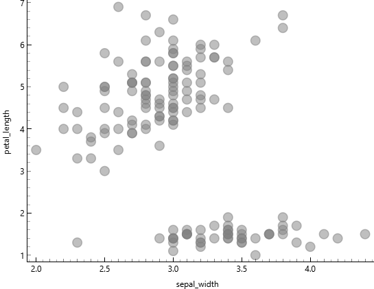
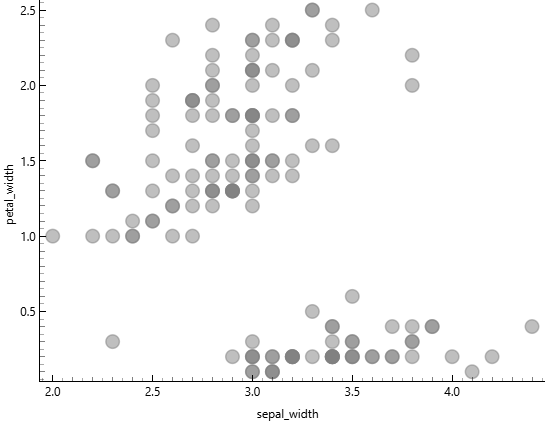
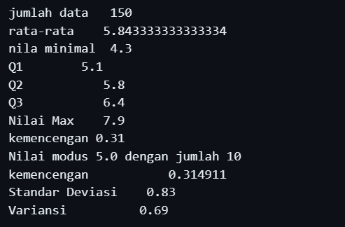

Data Understanding#
Korelasi antara sepal_width dan sepal_length#

Dari gambar di atas menunjukkan korelasi antara sepal_widh dan sepal_length sangat lemah atau tidak ada korelasi, dikarenakan Titik-titik data tersebar tanpa membentuk pola yang jelas, menunjukkan bahwa tidak ada hubungan yang kuat antara sepal length dan sepal width. artinya Kedua variabel ini dapat dianggap sebagai fitur yang berdiri sendiri dan tidak saling mempengaruhi secara linear.
Korelasi antara petal_width dan petal_length#

dari gambar di atas menunjukkan korelasi antara petal_width dan petal_length sangat kuat, dikarenakan Titik-titik data membentuk pola yang jelas dari kiri bawah ke kanan atas, menunjukkan bahwa semakin besar nilai petal_length, semakin besar pula nilai petal_width. artinya kedua variabel sangat rapat membentuk pola linear yang jelas. namun terdapat Dua cluster yang terpisah kemungkinan besar merepresentasikan iris yang berbeda, tetapi tidak menyebabkan ambigu.
Korelasi antara sepal_length dan petal_length#

Dari gambar di atas menunjukkan korelasi antara sepal_length dan petal_length sangat kuat, dikarenakan titik-titik data membentuk pola yang jelas dari kiri bawah ke kanan atas, menunjukkan bahwa semakin besar nilai sepal_length, semakin besar pula nilai petal_length. Artinya kedua variabel sangat rapat membentuk pola linear yang jelas. Namun terdapat dua cluster yang terpisah kemungkinan besar merepresentasikan iris yang berbeda, tetapi tidak menyebabkan ambigu.
Korelasi antara sepal_length dan petal_width#

Dari gambar di atas menunjukkan korelasi antara sepal_length dan petal_width sangat kuat, dikarenakan titik-titik data membentuk pola yang jelas dari kiri bawah ke kanan atas, menunjukkan bahwa semakin besar nilai sepal_length, semakin besar pula nilai petal_width. Artinya kedua variabel sangat rapat membentuk pola linear yang jelas. Namun terdapat dua cluster yang terpisah kemungkinan besar merepresentasikan iris yang berbeda, tetapi tidak menyebabkan ambigu.
Korelasi antara sepal_width dan petal_length#

Dari gambar di atas menunjukkan korelasi antara sepal_width dan petal_length cenderung lemah, dikarenakan titik-titik data tidak membentuk pola linear yang konsisten dari kiri bawah ke kanan atas. Terlihat adanya dua cluster yang sangat terpisah secara vertikal, di mana cluster bawah memiliki petal_length rendah dan cluster atas memiliki petal_length tinggi, namun dalam masing-masing cluster tidak ada hubungan yang jelas dengan sepal_width. Artinya kedua variabel tidak menunjukkan pola yang rapat dan penyebaran data relatif acak. Dua cluster yang terpisah ini kemungkinan besar merepresentasikan spesies iris yang berbeda dengan karakteristik yang sangat berbeda, dan pemisahan yang sangat jelas ini tidak menyebabkan ambigu.
Korelasi antara sepal_width dan petal_width#

Dari gambar di atas menunjukkan korelasi antara sepal_width dan petal_width lemah atau tidak konsisten, dikarenakan titik-titik data tidak membentuk pola linear yang jelas dari kiri bawah ke kanan atas. Terlihat adanya dua cluster yang sangat terpisah secara vertikal, di mana cluster bawah memiliki petal_width sangat rendah dan cluster atas memiliki petal_width lebih tinggi, namun dalam masing-masing cluster penyebaran data relatif acak tanpa menunjukkan hubungan yang kuat dengan sepal_width. Artinya kedua variabel tidak membentuk pola linear yang rapat dan peningkatan sepal_width tidak diikuti oleh peningkatan petal_width secara konsisten. Dua cluster yang terpisah ini kemungkinan besar merepresentasikan spesies iris yang berbeda, dan pemisahan yang sangat jelas ini tidak menyebabkan ambigu.
Statistik dikriptif#

Berdasarkan tabel statistik deskriptif di atas, dataset Iris menunjukkan karakteristik yang menarik untuk setiap variabel pengukuran. Pada sepal_length, nilai rata-rata sebesar 5.84 cm sangat dekat dengan median 5.8 cm, mengindikasikan distribusi data yang relatif simetris dan terkonsentrasi di kisaran 5-6 cm dengan variasi yang kecil. Sementara itu, sepal_width memiliki mean 3.05 cm dengan median dan mode sama-sama bernilai 3 cm, menunjukkan bahwa lebar sepal cenderung homogen antar spesies dengan penyebaran data yang rapat. Berbeda dengan pengukuran sepal, variabel petal_length dan petal_width menunjukkan pola yang lebih kompleks. Nilai mode pada petal_length (1.5 cm) dan petal_width (0.2 cm) sangat berbeda dengan median masing-masing (4.35 cm dan 1.3 cm), yang mengindikasikan adanya distribusi bimodal atau dua kelompok data yang terpisah jelas. Hal ini diperkuat oleh nilai dispersi yang lebih tinggi pada petal_width (0.63) dibandingkan variabel lainnya, menunjukkan bahwa pengukuran petal memiliki variabilitas yang lebih besar dan lebih efektif untuk membedakan antar spesies.
data in jupyter book#

Analisis dilakukan pada variabel sepal_length dari dataset Iris dengan jumlah data sebanyak 150 observasi.Nilai rata-rata sebesar 5,84 dan median sebesar 5,8 menunjukkan bahwa distribusi data cukup seimbang, karena kedua nilai tersebut hampir sama. Nilai minimum adalah 4,3 dan maksimum 7,9, sehingga rentang data tergolong cukup luas.Kuartil pertama (Q1) sebesar 5,1 dan kuartil ketiga (Q3) sebesar 6,4 menunjukkan bahwa sebagian besar data berada dalam interval tersebut. Standar deviasi sebesar 0,83 menandakan bahwa penyebaran data tidak terlalu besar dan masih relatif stabil.Nilai skewness sebesar 0,31 menunjukkan distribusi sedikit condong ke kanan, tetapi tidak signifikan. Modus sebesar 5,0 dengan frekuensi 10 kali menunjukkan bahwa nilai tersebut paling sering muncul.Secara keseluruhan, distribusi panjang sepal cenderung stabil, relatif simetris, dan tidak menunjukkan adanya penyimpangan ekstrem yang berarti.
Kode#
import pandas as pd
from scipy import stats
df = pd.read_csv("/content/IRIS.csv")
print("Daftar Kolom:", df.columns.tolist())
print("-" * 30)
print("Jumlah data :", df['sepal_length'].count())
print("Rata-rata :", df['sepal_length'].mean())
print("Nilai minimal :", df['sepal_length'].min())
print("Q1 :", df['sepal_length'].quantile(0.25))
print("Q2 (Median) :", df['sepal_length'].quantile(0.5))
print("Q3 :", df['sepal_length'].quantile(0.75))
print("Nilai Max :", df['sepal_length'].max())
print("Kemencengan 1 :", "{0:.2f}".format(round(df['sepal_length'].skew(), 2)))
print("Kemencengan 2 :", "{0:.6f}".format(round(df['sepal_length'].skew(), 6)))
print("Standar Deviasi :", "{0:.2f}".format(round(df['sepal_length'].std(), 2)))
print("Variansi :", "{0:.2f}".format(round(df['sepal_length'].var(), 2)))
mode = stats.mode(df['sepal_length'], keepdims=True)
print("Nilai modus {} dengan jumlah {}".format(mode.mode[0], mode.count[0]))
Output#
Daftar Kolom: [‘sepal_length’, ‘sepal_width’, ‘petal_length’, ‘petal_width’, ‘species’]
Jumlah data : 150
Rata-rata : 5.843333333333334
Nilai minimal : 4.3
Q1 : 5.1
Q2 (Median) : 5.8
Q3 : 6.4
Nilai Max : 7.9
Kemencengan 1 : 0.31
Kemencengan 2 : 0.314911
Standar Deviasi : 0.83
Variansi : 0.69
Nilai modus 5.0 dengan jumlah 10
1. Mengukur Jarak dengan Tipe Data Campuran#
Data campuran mencakup dua tipe data yang berbeda:
Numerik: Misalnya, panjang kelopak bunga dalam dataset Iris.
Kategorikal: Misalnya, jenis spesies bunga dalam dataset Iris (Setosa, Versicolor, Virginica).
Untuk mengukur jarak antara dua titik data yang memiliki tipe campuran, kita bisa menggunakan Jarak Gower. Berikut adalah cara kerjanya:
Untuk data numerik, jarak dihitung menggunakan Jarak Euclidean.
Untuk data kategorikal, jarak dihitung dengan Jarak Hamming (0 jika sama, 1 jika berbeda).
Kedua jarak ini kemudian digabungkan dengan bobot yang sesuai.
Formula Jarak Gower: [ d(x, y) = \frac{1}{n} \sum_{i=1}^{n} \text{Jarak untuk fitur i} ]
Untuk data numerik, kita bisa menggunakan Euclidean atau Manhattan, sementara untuk data kategorikal, kita menggunakan Hamming.
2. Analisis Menggunakan Orange Data Mining untuk Data Campuran#
Orange adalah alat visual untuk analisis data yang memungkinkan Anda untuk melakukan analisis data secara grafis. Berikut adalah langkah-langkah analisis menggunakan Orange:
Impor Dataset Iris:
Buka Orange, pilih widget File untuk memuat Iris dataset.
Pilih Widget “Distance” untuk memilih jenis jarak yang digunakan.
Pilih Euclidean atau Manhattan untuk data numerik.
Pilih Widget “k-Means” untuk melakukan klastering berdasarkan jarak yang sudah dipilih.
Gunakan k-Means untuk mengelompokkan data berdasarkan jarak.
Visualisasi dengan Widget “Scatter Plot”:
Visualisasikan hasil klastering dengan menggunakan widget Scatter Plot untuk melihat pemisahan data berdasarkan klaster.
Evaluasi dengan Widget “Data Table” untuk melihat hasil clustering.
3. Implementasi Khusus untuk Dataset Iris#
a. Menghitung Jarak Euclidean dan Manhattan pada Iris#
Berikut adalah contoh kode Python untuk menghitung Jarak Euclidean dan Manhattan antara dua titik dalam dataset Iris:
from scipy.spatial.distance import euclidean, cityblock
from sklearn.datasets import load_iris
# Mengambil dataset Iris
iris = load_iris()
data = iris.data # Data fitur iris
# Menghitung jarak Euclidean dan Manhattan antara dua data
point1 = data[0] # Data pertama
point2 = data[1] # Data kedua
euclidean_dist = euclidean(point1, point2)
manhattan_dist = cityblock(point1, point2)
print(f"Euclidean Distance: {euclidean_dist}")
print(f"Manhattan Distance: {manhattan_dist}")
Laporan Pengukuran Jarak pada Data Campuran Menggunakan Orange#
1. Pendahuluan#
Data campuran mencakup berbagai tipe data, seperti numerik, ordinal, dan kategorikal. Dalam tugas ini, kami melakukan analisis data campuran menggunakan Orange Data Mining untuk mengukur jarak antar data dengan berbagai tipe data dan kemudian melakukan klastering.
Dataset yang digunakan adalah dataset multivariat yang mengandung data kategorikal (seperti nama kota dan negara bagian), numerik (seperti populasi dan pendapatan), dan ordinal (seperti kategori atau skor berdasarkan urutan tertentu).
2. Persiapan Data#
Dataset yang digunakan mengandung beberapa kolom dengan tipe data yang berbeda. Berikut adalah struktur dataset:
id |
x1 (City) |
x2 (State) |
x3 (Population) |
x4 (Income) |
… |
|---|---|---|---|---|---|
1 |
Los_Angeles |
CA |
4060 |
8863164 |
… |
2 |
Cook |
IL |
946 |
5105067 |
… |
… |
… |
… |
… |
… |
… |
Kolom x1: Nama kota (kategorikal).
Kolom x2: Negara bagian (kategorikal).
Kolom x3 - x13: Fitur numerik (misalnya, populasi, pendapatan).
Kolom x14: Data ordinal yang mengindikasikan kategori atau urutan.
3. Langkah-langkah di Orange#
a. Mengimpor Dataset#
Dataset diimpor menggunakan widget File di Orange. Setelah dataset dimuat, Anda dapat melihat dan memproses data lebih lanjut.
b. Mengonversi Data Ordinal#
Karena dataset mengandung data ordinal (misalnya, tingkat kepuasan yang bisa berupa Low, Medium, High), kami mengonversinya menjadi data numerik. Proses ini dilakukan menggunakan widget Edit Domain di Orange, yang memungkinkan kita untuk mengganti nilai ordinal dengan angka numerik, seperti:
High = 3
Medium = 2
Low = 1
c. Menghitung Jarak dengan Widget “Distance”#
Setelah data ordinal dikonversi menjadi numerik, kami menggunakan widget Distance di Orange untuk menghitung jarak antar data. Untuk data numerik seperti kolom x3 - x13, kami memilih Euclidean Distance. Untuk data kategorikal seperti x1 (City) dan x2 (State), kami memilih Hamming Distance untuk menghitung jarak antara kategori.
d. Klastering dengan Widget “k-Means”#
Dengan jarak yang telah dihitung, kami menggunakan widget k-Means untuk melakukan klastering pada dataset. Kami memilih 3 cluster untuk mengelompokkan data berdasarkan kriteria yang relevan. Widget k-Means mengelompokkan data berdasarkan jarak antar titik data yang dihitung sebelumnya.
e. Visualisasi dengan Widget “Scatter Plot”#
Setelah klastering selesai, kami menggunakan widget Scatter Plot untuk memvisualisasikan hasil klastering. Visualisasi ini menunjukkan pemisahan data ke dalam 3 cluster berdasarkan jarak antar data.
f. Evaluasi Hasil dengan “Data Table”#
Untuk mengevaluasi hasil klastering, kami menggunakan widget Data Table untuk melihat informasi lebih lanjut tentang setiap data dan cluster yang diberikan oleh k-Means. Kolom Cluster menunjukkan hasil klastering (misalnya C1, C2, C3).
4. Hasil Klastering#
Berdasarkan hasil klastering, data terkelompok dengan baik menjadi beberapa grup. Misalnya:
C1: Los Angeles, Cook, Harris
C2: San Diego, Orange, Wayne
C3: Dallas, San Bernardino, Alameda
Tabel Hasil Klastering:#
id |
City |
Cluster |
Silhouette |
|---|---|---|---|
1 |
Los_Angeles |
C1 |
0.56 |
2 |
Cook |
C1 |
0.51 |
3 |
Harris |
C1 |
0.53 |
… |
… |
… |
… |
<br>

<br>
## 5. Kesimpulan
Melalui penggunaan **Orange Data Mining**, kami berhasil melakukan analisis jarak pada data campuran yang mencakup **data numerik**, **ordinal**, dan **kategorikal**. Kami mengonversi data ordinal menjadi numerik, menghitung jarak antar data menggunakan **Euclidean** dan **Hamming Distance**, dan kemudian melakukan klastering menggunakan **k-Means**. Hasil klastering menunjukkan pemisahan yang baik antar grup data.
Dengan cara ini, **Orange** dapat digunakan untuk mengelompokkan data campuran dan menghasilkan informasi yang berguna untuk analisis lebih lanjut.